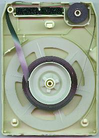
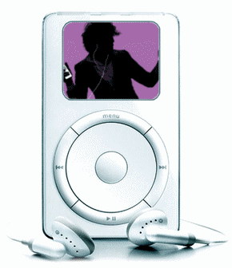

Los discos de diferentes velocidades y materiales existen desde principios del siglo XX—las primeras versiones giraban a 78 RPM (revoluciones por minuto) y estaban hechas de goma laca, con lo cual producían mucho ruido y eran bastante frágiles.
En 1948, Columbia Records fabricó un disco de 12 pulgadas que giraba a 33 RPM, un disco de ‘formato largo’ que hoy en día conocemos y amamos, el LP.
El primer LP jamás prensado se llamó Columbia ML4001, y era un «Mendelssohn Violin Concerto in E Minor» por el violinista Milstein con la New York Philharmonic Symphony Orchestra, dirigida por Bruno Walter.
Poco después, RCA Records desarrolló el formato ‘single’ de 7 pulgadas, a 45 RPM, también conocido como EP.
Debido a la fragilidad de la goma laca, que se rompía muy a menudo durante el transporte, tanto Columbia como RCA Records acabaron produciendo sus LPs y EPs en vinilo.
El tamaño y la portabilidad eran los principales inconvenientes del vinilo. Con el tiempo, la música industria fue buscando una solución y desarrolló nuevos formatos que la gente podía llevar fácilmente al trabajo, a fiestas, etc.
A pesar de los numerosos formatos físicos creados desde los vinilos, el mercado de este formato sigue estando fuerte: según un informe de Discogs de mediados de 2017, el formato físico más popular en ventas este año es el vinilo, con un aumento de casi el 14% respecto al año anterior.
Pero aunque el vinilo conserva su popularidad a pesar del paso de los años, dejó de ser el principal formato, puesto que los oyentes fueron en busca de otro paso adelante.
Los cassettes compactos, o cintas, fueron inventados por la compañía Philips e introducidos a Europa en el Berlin Radio Show—la convención tecnológica más antigua de Europa.
Los primeros cassettes contaban con un almacenamiento invertido de un máximo de 45 minutos en estéreo por cada cara—bastante más que un vinilo LP.
Los cassettes era además más económicas y compactas. Su pequeño tamaño invitó a la creación y popularización de los reproductores portátiles, lo que significó además una revolución en la forma y el lugar en que escuchamos música.
El cassette también funcionó a la perfección durante la post-guerra. Un boom de la población y una expansión de los suburbios significan coches… muchos coches. Así que la necesidad de crear sistemas y formatos de reproducción era latente.
La invención de los cassettes también trajo de la mano un nuevo concepto para la música grabada: la piratería.
La llegada de los cassettes y las grabadoras de cassette hizo que los sellos discográficos se temieran lo peor para la industria musical. Después de varios intentos por incluir impuestos en las cintas vírgenes, en 1989 apareció el DAT (digital audio tape) Bill, que limitaba la cantidad de cintas que cada persona podía comprar para evitar así la creación de copias de copias, también conocida como el sistema SCMS.
Los cassettes también originaron la cultura mixtape—un concepto importantísimo en la industria musical actual.
Sin embargo, esto no sirvió de mucho para las discográficas, que creían que ellos debían recibir estos impuestos. En 1991 fue presentado el Audio Home Recording Act, que recogía los impuestos de los medios de comunicación y editores y los distribuía entre los sellos discográficos.
Pero todo no eran maletines, tribunales e impuestos en los cassettes… Los cassettes también originaron la cultura mixtape, ofreciendo así a los creadores amateurs la posibilidad de mezclar varios trabajos y recopilarlos en una sola lista de reproducción—un concepto importantísimo en la industria musical actual.
Hoy en día, los cassettes no son nuestra forma principal de escuchar música, pero la industria sigue activa—En 2016, las ventas de cassettes crecieron un 74% respecto al año anterior
La cinta 8 pistas fue una invención colaborativa de un trio sin precedentes formado por RCA Records, Lear Jet Company y Ampex Magnetic Tape Company. Puede parecer una combinación extraña, pero Bill Lear de Lear Jet Corporation, junto con su empleado Richard Kraus, fueron los responsables de diseñar los cartuchos para las cintas de 8 pistas.
Lear, fabricante de aviones privados de lujo, se interesaba por el audio y ya había tratado de construir una grabadora en loop infinito en los años 40.
Lo bueno de las cintas 8 pistas respecto a los cassettes compactos era la posibilidad de acoger 8 pistas de audio a la vez con 4 programas de estéreo correspondientes—podían reproducir mucha música con un tamaño relativamente pequeño.
Gran parte del éxito del 8 pistas se debe al boom de la industria automóvil de la época. En 1966, Ford Motors ofrecía el reproductor 8 pistas como opción en su completa línea de automóviles.
En el hogar, los reproductores fueron introducidos al año siguiente, y muchos vieron el 8 pistas como la solución al problema de portabilidad de los discos y los tocadiscos.
A pesar de su popularidad en los 60 y 70, los cassettes compactos acabaron siendo el formato más popular para artistas y consumidores gracias a su pequeño tamaño y precio. Como resultado, el 8 pistas quedó obsoleto. Y continúa estándolo hoy en día.
Se dice que el último 8 pistas publicado por un gran sello es Fleetwood Mac’s Greatest Hits, publicado en Noviembre de 1988 por Warner Records—¿tal vez esto signifique que nunca volveremos atrás?

En 1974, Philips (sí, el mismo de los casetes) tuvo la idea inicial de crear los CDs como sustituto de los vinilos y los casetes. Al mismo tiempo, Sony también estaba trabajando en su prototipo. La propuesta de Sony vio la luz en 1976.
Al final, las dos compañías se pusieron de acuerdo y lanzaron el CD como formato viable en 1982. Además, Sony también presentó el primer reproductor de CDs ese mismo año, el CDP-101, ¡que costaba 1000$!
Con el CD, también llegaron los reproductores de CD portátiles, los CD-ROM, los CDs grabables y el 16-bit/44.1kHz, referencia para los formatos de audio. Todos ellos han tenido un gran impacto en la forma en que escuchamos música hoy en día.
Además, los CDs reunían lo mejor de cada uno de los formatos precedentes: gran calidad de audio, compactos, portátiles, grabables y baratos.
El CD supuso un avance muy importante para la industria de la música, y se convirtió al instante en el formato de publicación durante décadas.
Se trataba de una necesidad que solo el CD y el Discman podían cubrir solo durante un corto periodo.
Pero en cierto modo el CD supuso también el fin de los formatos físicos. Los ordenadores y el MP3 (ahora hablaremos de él) se convirtieron rápidamente en la forma estándar de escuchar música. Y con la invención de internet y la evolución de los ordenadores, cada vez era más sencillo. Se trataba de una necesidad que solo el CD y el Discman podían cubrir solo durante un corto periodo.
En cuanto el acceso a la música fue posible a través del ordenador o reproductor MP3, la mayoría de gente no quería tener copias físicas de su música, puesto que podían guardarlo todo en una carpeta de su escritorio.
Por supuesto, los CDs no se evaporaron de la noche a la mañana. Aún hay muchos fans de los CDs. Aunque el informe de Discogs de mediados de 2017 cita al vinilo como el formato físico con mayor crecimiento, la venta de CDs usados aumentó un 23,23%.
El MP3 fue desarrollado originalmente a principios de los 80 por el investigador Karlheinz Brandenburg. Su trabajo post-doctoral en AT&T Bell Labs expandió los codecs ya existentes para comprimir audio. Brandenburg eligió usar el hit de 1987 de Suzanne Vega, ‘Tom’s Diner’ como canción test para perfeccionar el MP3.
Pero no fue hasta 1992 cuando el MP3 se popularizó, y hasta 1999—con la creación de Napster—cuando el formato explotó.
La industria musical está comenzando a recuperarse de su propio amanecer digital…
Napster permitía compartir archivos de audio en MP3 de forma gratuita en peer-to-peer, lo cual terminó significando el no-respeto sistemático de los derechos de audio y desató la furia de la industria musical.
A pesar de su breve existencia de 3 años en su formato originario, Napster abrió el camino a otras plataformas como iTunes store—que permitía a los usuarios buscar, comprar y escuchar música en unos pocos clics.
Los efectos del terremoto causado por el MP3, la piratería y los formatos puramente digitales aún se notan hoy en día. En cierto modo, la industria musical está comenzando a recuperarse de su propio amanecer digital…

Con el acceso a internet disponible en todo momento gracias a la tecnología móvil, los desarrolladores y empresarios vieron una oportunidad para crear algo grande: La posibilidad de escuchar y descubrir nueva música sin necesidad de descargar los archivos o comprar canciones.
Además, las plataformas de streaming se fijaron como objetivo (o eso esperamos) hacer que el modelo de negocio de la música digital fuera sostenible para todos los actores implicados. Y ya lo está cumpliendo, aunque todavía queda mucho trabajo por hacer.
El lanzamiento del iPhone en 2007 es el principal culpable de la explosión de popularidad del streaming y las radios online. Las aplicaciones que anteriormente solo eran accesibles en un ordenador ahora también se podían usar en la palma de la mano.
Al año siguiente nació Spotify, que funciona gracias a los anuncios de pago. Los usuarios tiene dos posibilidades: escuchar música gratis con anuncios, o pagar una cuota mensual para obtener streaming ilimitado y sin interrupciones.
Las apps de streaming cubrieron la enorme demanda de acceso no-físico a la música y marcaron el camino para el capítulo actual de formatos: la música desmaterializada.
Si esta lista demuestra algo, es que nada es para siempre—especialmente en la música.
Para bien o para mal, todos los formatos musicales han tenido un rol importante en el camino hasta el streaming. Aunque el streaming no ha acabado con el resto de formatos de audio, no podemos negar que se trata hoy en día de la forma estándar de la que escuchamos música. Al menos por ahora…